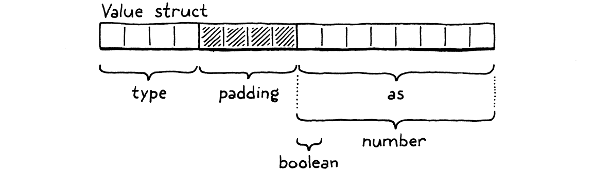
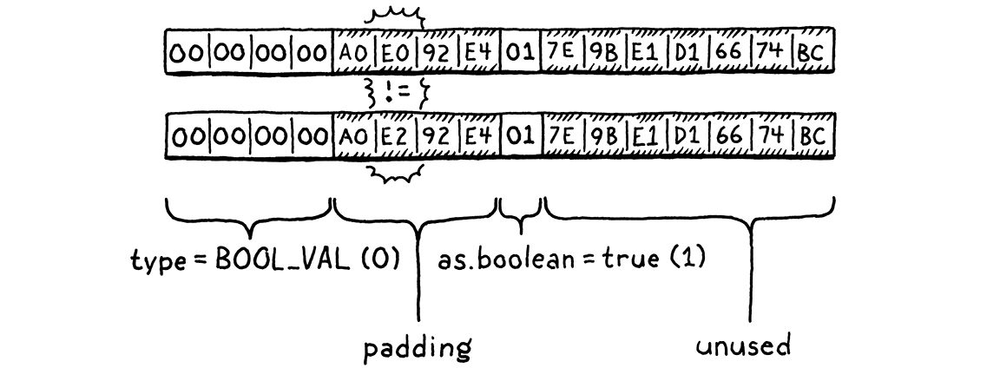

值的类型
当你是一只脑子很小的熊，想事情的时候，有时候会发现：某些在你心里显得很「像回事」的东西， 等它摆到台面上、让旁人瞧着看，就完全不是那么回事了。
A. A. 米尔恩，《小熊维尼》
前面几章分量很重，塞满了复杂的技术和一页又一页的代码。这一章只要学一个新概念，外加些 直来直去的代码。你够格歇一歇了。
Lox 是动态类型的。同一个变量，在不同时间点可以装下布尔值、
数字或字符串。至少，设计上是这么打算的。此刻在 clox 里，所有值都是数字；到本章结束时，
它还会支持布尔值和 nil。这两样本身没什么意思，但它们逼着我们想明白一件事：值的表示得
怎么才能动态地应付不同的类型。
18 . 1带标签联合体
用 C 干活的好处在于，你可以从最底层的比特开始搭数据结构。坏处是，你必须这么干。 C 在编译期不白送你多少东西，运行时给的更少。在 C 眼里，宇宙就是一坨没有差别的字节数组。 用掉其中几个字节、它们各自代表什么，得我们说了算。
要挑一种值的表示方式，得先回答两个关键问题：
-
一个值的类型怎么表示？ 比如你想拿一个数字去乘
true，我们得在运行时察觉这个错误 并报出来。要做到这点，就得能看出一个值是什么类型。 -
值本身怎么存？ 我们不光要看出三是个数字，还得看出它和四不是一回事。我知道，这看着 很显然，对吧？但我们所在的这个层面，把这些掰开讲清楚是有必要的。
既然我们不只是在设计这门语言，还要亲手把它造出来，那回答这两个问题时，就必须同时惦记着 实现者永恒的追求：高效。
这些年来，语言黑客们想出了各种巧办法，把上面那点信息塞进尽可能少的比特里。眼下我们从 最简单、最经典的方案开始：带标签联合体（tagged union）。一个值由两部分组成：一个类型 「标签」，以及装着实际数值的载荷。要把值的类型存下来，我们就为虚拟机支持的每种值定义 一个枚举。
#include "common.h"
typedef enum { VAL_BOOL, VAL_NIL, VAL_NUMBER, } ValueType;
typedef double Value;
眼下我们只有这么几项，但随着往 clox 里添字符串、函数和类，这个枚举还会变长。除了类型，
值的数据也得存——数字存一个 double，布尔值存 true 或 false。我们可以定义一个
结构体，给每种可能的类型各配一个字段。
但这样浪费内存。一个值不可能同时既是数字又是布尔值，所以任一时刻只有其中一个字段用得上。 C 允许你定义一个联合体（union）来省掉这份浪费。联合体看起来和 结构体一模一样，区别在于它的所有字段在内存里是重叠的。
联合体的大小等于其中最大字段的大小。因为所有字段都在复用同一批比特，用它们的时候你 必须格外小心。要是先用某个字段存了数据，再换另一个字段去读， 你就会把底下那点比特的含义重新解释一遍。
从名字也能看出来，「带标签联合体」就是把结构体和联合体这两样合进同一个结构体。
} ValueType;
加在枚举 ValueType 之后
替换 1 行
typedef struct { ValueType type; union { bool boolean; double number; } as; } Value;
typedef struct {
一个字段放类型标签，第二个字段装着所有底层值的联合体。在 64 位机器上、用常见的 C 编译器， 布局长这样：

四字节的类型标签在前头，然后是联合体。多数架构希望值按自身大小对齐。既然联合体字段里装着 一个八字节的 double，编译器就会在 type 字段后面补上四字节填充， 好让那个 double 落在最近的八字节边界上。也就是说，我们在类型标签上实际花掉了八字节， 而它只需要表示零到三之间的数。完全可以把这个枚举塞进更小的尺寸，可那样只会让 填充变多。
所以我们的 Value 是 16 字节，听着有点大。以后再改进它。在那之前，它还 小到能塞进 C 栈里、也能按值传来传去。Lox 的语义允许这么干，因为我们目前支持的类型都是 不可变的。假如我们把一个装着数字三的 Value 的副本传给某个函数，不必担心调用方会看到 它被改动。三是没法「修改」的，它永远是三。
18 . 2Lox 的值与 C 的值
值的表示算是定下来了，但活还没干完。此刻 clox 的其余部分都以为 Value 就是 double 的
别名，代码里到处是从一个直接 C 转换到另一个。现在这些代码全废了。可悲。
换上新的表示，Value 可以装下一个 double，但它和 double 并不等价。从一个走到 另一个，中间必须过一道转换。我们得把代码过一遍，把这些转换插进去，才能让 clox 重新 跑起来。
我们会把这些转换实现成一小组宏，每种类型、每种操作各一个。先是把一个原生 C 值提升成 clox 的 Value：
} Value;
加在结构体 Value 之后
#define BOOL_VAL(value) ((Value){VAL_BOOL, {.boolean = value}}) #define NIL_VAL ((Value){VAL_NIL, {.number = 0}}) #define NUMBER_VAL(value) ((Value){VAL_NUMBER, {.number = value}})
typedef struct {
每一个都接收一个对应类型的 C 值，产出一个标签正确、装着对应底层数据的 Value。这等于把 静态类型的值抬进 clox 那个动态类型的宇宙。不过要拿一个 Value 做点什么，就得反过来 拆开它，把 C 值取出来。
} Value;
加在结构体 Value 之后
#define AS_BOOL(value) ((value).as.boolean) #define AS_NUMBER(value) ((value).as.number)
#define BOOL_VAL(value) ((Value){VAL_BOOL, {.boolean = value}})
这批宏走的是反方向。给定一个类型正确的 Value，它们把它拆开， 返回对应的原始 C 值。类型得对，这点很关键！这些宏是直接去碰联合体字段的。要是我们干了 这种事：
Value value = BOOL_VAL(true); double number = AS_NUMBER(value);
那我们可能就地开了一扇通往影界的门，正熊熊燃烧。除非你清楚这个 Value 装的是什么类型，
否则用任何一个 AS_ 宏都不安全。为此，我们再定义几个宏来检查 Value 的类型。
} Value;
加在结构体 Value 之后
#define IS_BOOL(value) ((value).type == VAL_BOOL) #define IS_NIL(value) ((value).type == VAL_NIL) #define IS_NUMBER(value) ((value).type == VAL_NUMBER)
#define AS_BOOL(value) ((value).as.boolean)
这批宏在 Value 是该类型时返回 true。每次调用 AS_ 宏，都
得先用其中一个把路探清楚。有了这八个宏，我们就能安全地在 Lox 的动态世界和 C 的静态世界
之间倒腾数据了。
18 . 3动态类型的数字
值表示有了，进出它的工具也有了。要让 clox 重新跑起来，剩下的就是啃代码，把每一处跨过 这条边界的数据流动都修好。这是书里算不上惊艳的段落，可我答应过每一行代码都给你看， 那就奉陪到底。
我们创建的第一批值，是编译数字字面量时产生的常量。把词素（lexeme）转成 C 的 double 之后， 只要先裹成一个 Value，再存进常量表就行。
double value = strtod(parser.previous.start, NULL);
在 number() 内
替换 1 行
emitConstant(NUMBER_VAL(value));
}
运行时那边，我们有个打印值的函数。
void printValue(Value value) {
在 printValue() 内
替换 1 行
printf("%g", AS_NUMBER(value));
}
在把 Value 交给 printf() 之前，先拆开它、把里面的 double 取出来。过一会儿我们再回头给
这个函数补上其他类型，先让现有代码跑起来。
18 . 3 . 1一元取负与运行时错误
接下来最简单的操作是一元取负。它从栈上弹出一个值，取负，再把结果压回去。现在我们有别的 值类型了，不能再假定操作数是数字。用户完全可以写：
print -false; // 呃……
我们得体面地处理这种情况，也就是说，是时候上运行时错误了。在执行一个需要特定类型的 操作之前，先确认这个 Value 就是那个类型。
对一元取负来说，检查长这样：
case OP_DIVIDE: BINARY_OP(/); break;
在 run() 内
替换 1 行
case OP_NEGATE: if (!IS_NUMBER(peek(0))) { runtimeError("Operand must be a number."); return INTERPRET_RUNTIME_ERROR; } push(NUMBER_VAL(-AS_NUMBER(pop()))); break;
case OP_RETURN: {
先看栈顶那个 Value 是不是数字。不是的话，报运行时错误并停掉 解释器；是的话继续。只有这关验过了，我们才拆开操作数、取负、把结果裹好压回去。
要取到这个 Value，我们用一个新的小函数。
加在 pop() 之后
static Value peek(int distance) { return vm.stackTop[-1 - distance]; }
它从栈里返回一个 Value，但不把它弹出来。distance
参数说的是往栈顶往下数多远去找：零就是栈顶，一往下一格，以此类推。
报告运行时错误，我们用一个新的函数——接下来的书里它会一直被用到。
加在 resetStack() 之后
static void runtimeError(const char* format, ...) { va_list args; va_start(args, format); vfprintf(stderr, format, args); va_end(args); fputs("\n", stderr); size_t instruction = vm.ip - vm.chunk->code - 1; int line = vm.chunk->lines[instruction]; fprintf(stderr, "[line %d] in script\n", line); resetStack(); }
变参函数——接受不定数量参数的函数——你在 C 里肯定调用过，printf() 就是一个。但你
多半没定义过一个。这本书不是 C 语言教程，所以这里
我一带而过：... 和 va_list 那套东西，本质上是让我们能给 runtimeError() 传任意多个
参数。它再把这些转发给 vfprintf()，也就是 printf() 那个显式接收 va_list 的版本。
调用者可以给 runtimeError() 传一个格式串，后面跟若干个参数，就像直接调 printf() 那样。
runtimeError() 负责把这些参数格式化并打印出来。本章还用不上这个特性，但后面几章会生成
带其他数据的格式化错误消息。
在展示了那条「希望有点帮助」的错误消息之后，我们还要告诉用户，出错那一刻执行的是他代码的 哪一行。因为我们在编译器里留下了词法单元，可以拿它在编译进 字节码块的调试信息里查出行号。要是我们编译器干得对，这个行号就对应那段字节码所编译自的 源代码行。
查的时候用的是「当前字节码指令下标 减一」。因为解释器是先把指针推过一条指令、再执行
它，所以调用 runtimeError() 的那一刻，出事的是上一条指令。
要用 va_list 以及操作它的那些宏，得引入一个标准头文件。
加到文件开头
#include <stdarg.h>
#include <stdio.h>
有了这个，我们的虚拟机在对数字取负时不但能算对（就是我们弄坏之前那样），还能体面地处理 「给别的类型取负」这种错误尝试（虽然那些类型还不存在，但总归没坏）。
18 . 3 . 2二元算术运算符
现在运行时错误这套机制就位了，所以修二元运算符虽然更复杂，反而更容易。我们目前支持四个
二元运算符：+、-、*、/。它们彼此唯一的差别，是各自用了哪个底层 C 运算符。为了让
这四个运算符之间少些重复代码，我们把共性裹进了一个大预处理宏，把运算符词法单元当作参数
传进去。
几个章节之前，这个宏看着还挺多余的，可今天就体现出好处了：它让我们只在一处添加必要的 类型检查和转换。
#define READ_CONSTANT() (vm.chunk->constants.values[READ_BYTE()])
在 run() 内
替换 6 行
#define BINARY_OP(valueType, op) \ do { \ if (!IS_NUMBER(peek(0)) || !IS_NUMBER(peek(1))) { \ runtimeError("Operands must be numbers."); \ return INTERPRET_RUNTIME_ERROR; \ } \ double b = AS_NUMBER(pop()); \ double a = AS_NUMBER(pop()); \ push(valueType(a op b)); \ } while (false)
for (;;) {
是啊，我知道这宏长得有点吓人。这不是我平常会推荐的 C 写法，不过就这么着吧。改动和一元 取负那回大同小异：先检查两个操作数都是数字，只要有一个不是，就报运行时错误，然后 拉一下弹射座椅的拉杆。
操作数没问题的话，两个都弹出来并拆开。然后施加给定的运算符，把结果裹好，压回栈上。注意
我们没有直接用 NUMBER_VAL() 来裹结果，而是把要用的裹法作为宏参数
传进来。现有的算术运算符结果都是数字，所以传的是 NUMBER_VAL 宏。
}
在 run() 内
替换 4 行
case OP_ADD: BINARY_OP(NUMBER_VAL, +); break; case OP_SUBTRACT: BINARY_OP(NUMBER_VAL, -); break; case OP_MULTIPLY: BINARY_OP(NUMBER_VAL, *); break; case OP_DIVIDE: BINARY_OP(NUMBER_VAL, /); break;
case OP_NEGATE:
很快我就让你看看，为什么我们偏要把这个裹结果的宏做成参数。
18 . 4两种新类型
现有的 clox 代码全都能跑了。终于，可以加些新类型了。我们现在有了一台能跑的计算器，顺便 还做了一堆没必要的、疑神疑鬼式的运行时类型检查。内部已经能表示其他类型了，但用户的程序 还造不出这些类型的 Value。
至少现在还不行。我们从给三个新字面量加编译器支持开始：true、false 和 nil。它们
都很简单，一次性全做了。
数字字面量那边，我们得应付「数值有几十亿种可能」这件事。做法是把字面量的值存进字节码块的
常量表，再发一条字节码指令把那个常量载入。新类型其实也可以照办：比如把 true 存进
常量表，用 OP_CONSTANT 读出来。
可新类型要操心的值，说真的（嘿）就三个。为它们浪费一条两字节指令外加一个常量表条目， 纯属多余——而且慢！
我们改为定义三条专用指令，各负责把其中一个字面量压到栈上。
OP_CONSTANT,
在枚举 OpCode 内
OP_NIL, OP_TRUE, OP_FALSE,
OP_ADD,
我们的扫描器已经认得 true、false 和 nil 这几个关键字了，所以可以直接跳到解析器。
对我们这个基于表的 Pratt 解析器来说，只要把解析函数塞进这几个关键字词法单元所对应的那
几行就行。三个格子用同一个函数。先看：
[TOKEN_ELSE] = {NULL, NULL, PREC_NONE},
替换 1 行
[TOKEN_FALSE] = {literal, NULL, PREC_NONE},
[TOKEN_FOR] = {NULL, NULL, PREC_NONE},
这里：
[TOKEN_THIS] = {NULL, NULL, PREC_NONE},
替换 1 行
[TOKEN_TRUE] = {literal, NULL, PREC_NONE},
[TOKEN_VAR] = {NULL, NULL, PREC_NONE},
还有这里：
[TOKEN_IF] = {NULL, NULL, PREC_NONE},
替换 1 行
[TOKEN_NIL] = {literal, NULL, PREC_NONE},
[TOKEN_OR] = {NULL, NULL, PREC_NONE},
解析器在前缀位置遇到 false、nil 或 true 时，会调用这个新的解析函数：
加在 binary() 之后
static void literal() { switch (parser.previous.type) { case TOKEN_FALSE: emitByte(OP_FALSE); break; case TOKEN_NIL: emitByte(OP_NIL); break; case TOKEN_TRUE: emitByte(OP_TRUE); break; default: return; // 走不到这儿。 } }
既然 parsePrecedence() 已经把那个关键字词法单元吃掉了，我们只要发出正确的指令就行。
发哪一条，看我们解析出的词法单元类型就知道。前端现在能把
布尔字面量和 nil 字面量编译成字节码了。沿着执行流水线往下走，就到了解释器。
case OP_CONSTANT: {
Value constant = READ_CONSTANT();
push(constant);
break;
}
在 run() 内
case OP_NIL: push(NIL_VAL); break; case OP_TRUE: push(BOOL_VAL(true)); break; case OP_FALSE: push(BOOL_VAL(false)); break;
case OP_ADD: BINARY_OP(NUMBER_VAL, +); break;
这段一看就懂。每条指令召来对应的值，压到栈上。顺便别忘了我们的反汇编器。
case OP_CONSTANT:
return constantInstruction("OP_CONSTANT", chunk, offset);
在 disassembleInstruction() 内
case OP_NIL: return simpleInstruction("OP_NIL", offset); case OP_TRUE: return simpleInstruction("OP_TRUE", offset); case OP_FALSE: return simpleInstruction("OP_FALSE", offset);
case OP_ADD:
有了这些，我们就能运行这个「撼动地球」的程序了：
true
只是解释器一尝试打印结果就炸了。我们还得扩展 printValue()，让它也认这些新类型：
void printValue(Value value) {
在 printValue() 内
替换 1 行
switch (value.type) { case VAL_BOOL: printf(AS_BOOL(value) ? "true" : "false"); break; case VAL_NIL: printf("nil"); break; case VAL_NUMBER: printf("%g", AS_NUMBER(value)); break; }
}
好了！我们现在有了新类型。只是它们暂时还不太顶用。除了当字面量用，你其实没法拿它们做
任何事。nil 还要再过一阵子才有用武之地，不过我们可以先让布尔值在逻辑运算符里干活。
18 . 4 . 1逻辑非与假值
最简单的逻辑运算符，是我们的老朋友——那个靠感叹号吃饭的一元取非。
print !true; // "false"
这个新操作，自然配一条新指令。
OP_DIVIDE,
在枚举 OpCode 内
OP_NOT,
OP_NEGATE,
我们可以复用当初为一元取负写的那个 unary() 解析函数来编译取非表达式。只要把它塞进解析表
就行。
[TOKEN_STAR] = {NULL, binary, PREC_FACTOR},
替换 1 行
[TOKEN_BANG] = {unary, NULL, PREC_NONE},
[TOKEN_BANG_EQUAL] = {NULL, NULL, PREC_NONE},
因为我早知道会有这一步，unary() 里本来就有一个按词法单元类型分支的 switch，用来决定
输出哪条字节码指令。我们只要再加一个 case。
switch (operatorType) {
在 unary() 内
case TOKEN_BANG: emitByte(OP_NOT); break;
case TOKEN_MINUS: emitByte(OP_NEGATE); break;
default: return; // 走不到这儿。
}
前端到此为止。走，去虚拟机那边，把这条指令变出来。
case OP_DIVIDE: BINARY_OP(NUMBER_VAL, /); break;
在 run() 内
case OP_NOT: push(BOOL_VAL(isFalsey(pop()))); break;
case OP_NEGATE:
和上一个一元运算符一样：弹出一个操作数，做运算，把结果压回去。而且同样地，我们得操心
动态类型。对 true 取逻辑非很容易，可拦不住哪个不守规矩的程序员写出这种东西：
print !nil;
一元负号那边，我们规定「对非数字取负」直接报错。但 Lox 跟
大多数脚本语言一样，在 ! 以及其他期待布尔值的地方要宽容得多。其他类型该怎么算，这条
规则叫作「假值」（falsiness），我们就在这里实现它：
加在 peek() 之后
static bool isFalsey(Value value) { return IS_NIL(value) || (IS_BOOL(value) && !AS_BOOL(value)); }
Lox 跟 Ruby 一样：nil 和 false 是假值，其他一切值都当 true 使。我们多了一条能生成的
指令，反汇编器那边就得能把它反生成出来。
case OP_DIVIDE:
return simpleInstruction("OP_DIVIDE", offset);
在 disassembleInstruction() 内
case OP_NOT: return simpleInstruction("OP_NOT", offset);
case OP_NEGATE:
18 . 4 . 2相等与比较运算符
还行。趁手热，把相等和比较运算符也一并解决：==、!=、<、>、<=、>=。返回布尔
结果的运算符，到这里就只剩逻辑运算符 and 和 or 了。那两个需要短路（说白了就是做一小段
控制流），我们还没准备好。
这是这些运算符对应的新指令：
OP_FALSE,
在枚举 OpCode 内
OP_EQUAL, OP_GREATER, OP_LESS,
OP_ADD,
等等，怎么只有三条？!=、<= 和 >= 呢？也可以给它们建指令。老实说，真建了虚拟机跑得
更快，所以如果目标是性能，我们应该建。
可我的主要目标是让你搞懂字节码编译器。我希望你开始把这么个观念吃透：字节码指令不需要 紧贴着用户的源代码。只要用户能看见的行为对得上，虚拟机爱用什么指令集、什么指令序列 都行。
表达式 a != b 和 !(a == b) 语义相同，所以编译器完全可以把前者当后者来编。不必搞一条
专门的 OP_NOT_EQUAL，输出一个 OP_EQUAL 再跟一个 OP_NOT 就行。同理，a <= b 和
!(a > b) 一样，a >= b 等于 !(a < b)。所以我们只需要三条
新指令。
不过解析器那边，确实有六个新运算符要塞进解析表。还是用之前那个 binary() 解析函数。
这是 != 那一行：
[TOKEN_BANG] = {unary, NULL, PREC_NONE},
替换 1 行
[TOKEN_BANG_EQUAL] = {NULL, binary, PREC_EQUALITY},
[TOKEN_EQUAL] = {NULL, NULL, PREC_NONE},
剩下五个在表里再往下一点。
[TOKEN_EQUAL] = {NULL, NULL, PREC_NONE},
替换 5 行
[TOKEN_EQUAL_EQUAL] = {NULL, binary, PREC_EQUALITY}, [TOKEN_GREATER] = {NULL, binary, PREC_COMPARISON}, [TOKEN_GREATER_EQUAL] = {NULL, binary, PREC_COMPARISON}, [TOKEN_LESS] = {NULL, binary, PREC_COMPARISON}, [TOKEN_LESS_EQUAL] = {NULL, binary, PREC_COMPARISON},
[TOKEN_IDENTIFIER] = {NULL, NULL, PREC_NONE},
binary() 里本来就有个 switch，按词法单元类型生成对应的字节码。给这六个新运算符各加
一个 case。
switch (operatorType) {
在 binary() 内
case TOKEN_BANG_EQUAL: emitBytes(OP_EQUAL, OP_NOT); break; case TOKEN_EQUAL_EQUAL: emitByte(OP_EQUAL); break; case TOKEN_GREATER: emitByte(OP_GREATER); break; case TOKEN_GREATER_EQUAL: emitBytes(OP_LESS, OP_NOT); break; case TOKEN_LESS: emitByte(OP_LESS); break; case TOKEN_LESS_EQUAL: emitBytes(OP_GREATER, OP_NOT); break;
case TOKEN_PLUS: emitByte(OP_ADD); break;
==、< 和 > 各输出一条指令，其余的输出一对：一条算相反的运算，一条 OP_NOT 把结果
翻过来。六个运算符，只花三条指令的价钱！
这意味着在虚拟机那边活儿更简单了。相等是最通用的运算。
case OP_FALSE: push(BOOL_VAL(false)); break;
在 run() 内
case OP_EQUAL: { Value b = pop(); Value a = pop(); push(BOOL_VAL(valuesEqual(a, b))); break; }
case OP_ADD: BINARY_OP(NUMBER_VAL, +); break;
== 可以作用在任意两个对象上，哪怕类型不同也能比。这里面的复杂度足够撑起一个独立函数，
把逻辑挪过去是合理的。该函数总是返回一个 C 的 bool，所以可以放心用 BOOL_VAL 裹一下。
它和 Value 有关，就住在「value」模块里。
} ValueArray;
加在结构体 ValueArray 之后
bool valuesEqual(Value a, Value b);
void initValueArray(ValueArray* array);
实现如下：
加在 printValue() 之后
bool valuesEqual(Value a, Value b) { if (a.type != b.type) return false; switch (a.type) { case VAL_BOOL: return AS_BOOL(a) == AS_BOOL(b); case VAL_NIL: return true; case VAL_NUMBER: return AS_NUMBER(a) == AS_NUMBER(b); default: return false; // 走不到这儿。 } }
先查类型。两个 Value 类型不同，那肯定不相等。否则拆开两个 Value，直接比。
每种值类型各有一个 case，负责比较值本身。各 case 这么像，你可能会想：直接 memcmp() 一下
两个 Value 结构体不就完了？问题在于，有了填充和大小不一的联合体字段，Value 里会含有没被
使用的比特。C 对那些比特里装着什么不作任何保证，所以两个相等的 Value 在那些用不上的
内存里完全可能不一样。

（你不会相信，为了搞明白这件事，我之前折腾了多久。）
总之，随着往 clox 里加类型，这个函数还会长出新 case。目前这三个够用了。其余的比较运算 要轻松些，因为它们只在数字上干活。
push(BOOL_VAL(valuesEqual(a, b)));
break;
}
在 run() 内
case OP_GREATER: BINARY_OP(BOOL_VAL, >); break; case OP_LESS: BINARY_OP(BOOL_VAL, <); break;
case OP_ADD: BINARY_OP(NUMBER_VAL, +); break;
我们早先把 BINARY_OP 宏扩展成了能处理返回非数值类型的运算符，现在正好用上。结果类型是
布尔值，所以传 BOOL_VAL。除此之外，跟加减法没两样。
一如既往，今天这出戏的尾声是把新指令反汇编出来。
case OP_FALSE:
return simpleInstruction("OP_FALSE", offset);
在 disassembleInstruction() 内
case OP_EQUAL: return simpleInstruction("OP_EQUAL", offset); case OP_GREATER: return simpleInstruction("OP_GREATER", offset); case OP_LESS: return simpleInstruction("OP_LESS", offset);
case OP_ADD:
至此，我们那台计算器已经进化得有点像通用表达式求值器了。启动 clox，敲入：
!(5 - 4 > 3 * 2 == !nil)
好，我承认这个表达式大概称不上有多有用，但我们在进步。还差一种内置类型没做，它有自己的 字面量形式：字符串。字符串要复杂得多，因为它的长度会变。就这么一点差别，带来的影响却大到 我们不得不给字符串单开一章。
习题
-
我们的二元运算符还能比现在砍得更狠。还有哪些指令可以去掉？编译器要怎么应付它们的缺席？
-
反过来说，我们也可以靠添加更具体、对应更高层操作的指令，来提升字节码虚拟机的速度。 为了加速本章新支持的那类用户代码，你会定义哪些指令？